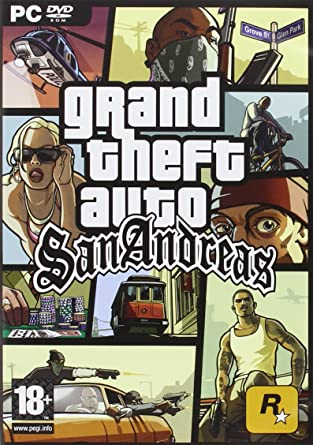

Grand Theft Auto: San Andreas is a 2004 action-adventure game developed by Rockstar North and published by Rockstar Games. It is the seventh title in the Grand Theft Auto series, and the follow-up to the 2002 game Grand Theft Auto: Vice City. It was released in October 2004 for PlayStation 2, and in June 2005 for Microsoft Windows and Xbox. The game, set within an open world environment that players can explore and interact with at their leisure, focuses on the story of former gangster Carl "CJ" Johnson, who is brought back home by the death of his mother, only to become involved in a long journey that sees him exploring the fictional U.S. state of San Andreas, which is heavily based on California and Nevada. |
 |
|---|---|
Grand Theft Auto: San Andreas is an action-adventure game with role-playing and stealth elements. Structured similarly to the previous two games in the series, the core gameplay consists of elements of third-person shooter and driving games, affording the player a large, open-world environment in which to move around. On foot, the player's character is capable of walking, running, sprinting, swimming, climbing, and jumping as well as using weapons and various forms of hand-to-hand combat. The player can operate a variety of vehicles, including automobiles, buses, semis, boats, fixed-wing aircraft, helicopters, trains, tanks, motorcycles, and bicycles. The player may also import vehicles in addition to stealing them. |
Other new features and changes from previous Grand Theft Auto games include:
Gang wars: Battles with enemy gangs are prompted whenever the player ventures into enemy territory and kills at least three gang members. If the player then survives three waves of enemies, the territory will be won, and fellow gang members will begin wandering the streets of these areas. The more territory owned by the player, the more money that will be generated. Occasionally, the player's territory will come under attack from enemy gangs and defeating them will be necessary to retain these areas. Once all marked territories are claimed for the protagonist's gang from one of the two hostile gangs, the opposing gang can no longer attack. Once the player takes control of all territories from both rival gangs, none can come under attack.
Car modification: Most automobiles in the game can be modified and upgraded at various garages. All car mods are strictly visual apart from the stereo system and nitrous oxide upgrade, which increases bass and gives the car a speed boost when activated, respectively; and hydraulics, which lowers the car's height by default and allows the player to control various aspects of the car's suspension. Other common modifications include paint jobs, rims, body kits, side skirts, bumpers, and spoilers.
Burglary:Continuing the series' tradition of controversy, home invasion is included as a potential money-making activity.By stealing a burglary van, CJ can sneak into a residence at night and cart off valuables or shake down the occupants.